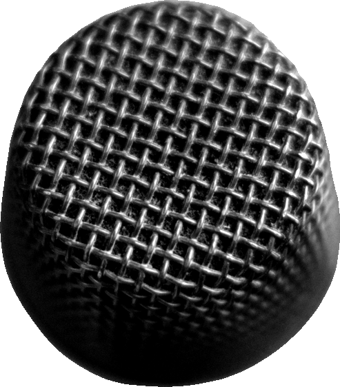
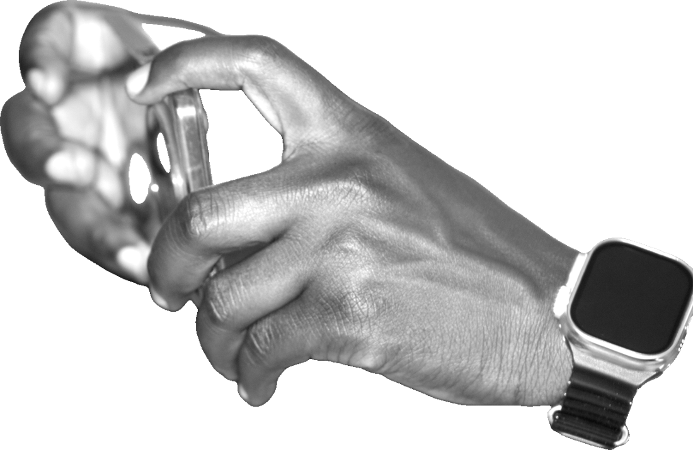
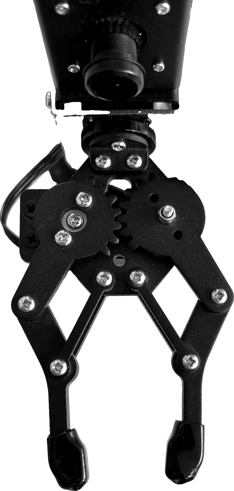

dengan
AI generated
product review ni?

buat video yang
nampak real,
Tapi persoalannya,
orang
masih
masih
percaya
ke?
ke?
Cuba korang scroll TikTok sekarang,
#affiliate

#productreviewaffiliate, review,
iklan.
iklan.
Ada yang guna
AI model,
AI
AI GENERATED
AI voice.
Lama-lama semuanya nampak
AI
AI
AI
sama je.
Menurut kajian TikTok 2026,
3 dari 4
skip content
yang nampak terlalu polished atau AI.
dan 9 daripada 10 kata
authentic
content pengaruh keputusan membeli.

but
authenticity
is becoming more valuable.

tapi aku bukan nak cakap
jangan guna AI.
First,
show,
don't just generate.


second,
share real
experiences.

Third, use AI as a
tool,
not your
identity.
korang masih
percaya ke?